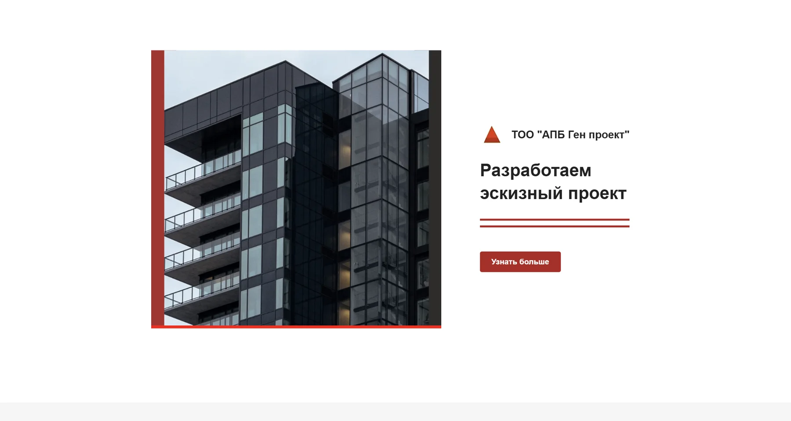
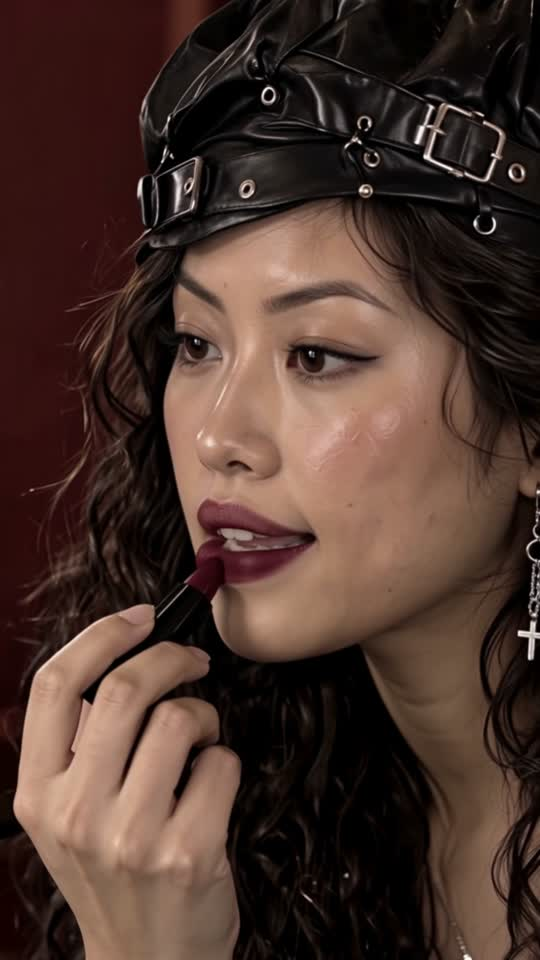

Ходячие мертвецы
Игра на выживание с раундами, голосованием за карту и ролями людей и зомби.
Создаю игры в Roblox, разрабатываю сайты и веду YouTube-канал DarkLore.
Смотреть работыИгра на выживание с раундами, голосованием за карту и ролями людей и зомби.

Витрина корейской косметики с каталогом и управлением заказами.
Мой канал с китайскими страшными историями и аудиторией более 3 000 подписчиков.

Сайт местного проектного бюро с коллекцией архитектурных чертежей.

Веб-приложение для перевода китайской речи и озвучки на русском.

Визуальный эксперимент с генеративным ИИ в формате короткого видео.
Я учусь на четвёртом курсе по специальности «Информационные системы в управлении» в университете имени Манаша Козыбаева.
Проходила производственную практику в ИП «Бухонин» и ТОО «АПБ Ген проект». В 2025 году стала соавтором статьи о клиентском опыте на примере сайта кафе Coffee Point для конференции «Молодёжь и наука».